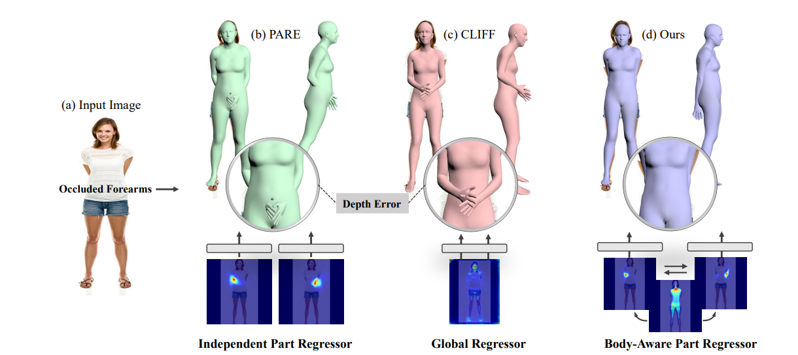

This paper presents a novel approach for estimating human body shape and pose from monocular images that effectively addresses the challenges of occlusions and depth ambiguity. Our proposed method BoPR,the Body-aware Part Regressor, first extracts features of both the body and part regions using an attention-guided mechanism. We then utilize these features to encode extra part-body dependency for per-part regression, with part features as queries and body feature as a reference. This allows our network to infer the spatial relationship of occluded parts with the body by leveraging visible parts and body reference information. Our method outperforms existing state-of-the-art methods on two benchmark datasets, and our experiments show that it significantly surpasses existing methods in terms of depth ambiguity and occlusion handling. These results provide strong evidence of the effectiveness of our approach.
